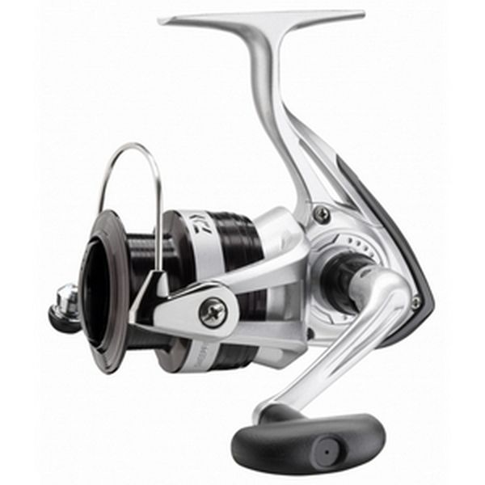

Катушка безынерционная
Описание товара
Безынерционная катушка обладает высокими показателями качества. Идеальная надежная и прочная катушка по привлекательной цене. Она отлично подойдет для начинающих рыболовов — любителей.
КупитьХарактеристики товара
- Тип катушки Light (спиннинг, поплавочная)
- Размер катушки 2500
- Подшипники 1
- Емкость шпули 0.25/190 м.
- Вес, гр. 206
Подробное описание товара
Модели укомплектованы передним тормозом с достаточной плавной регулировкой. Пара шестерен, установленные на катушках, выполнены по технологии Degegear II. Для предотвращения скручивания лески и плетеного шнура используется ролик Twist Buster II и шпуля с обратным конусом ABS. Надежность механизма обуславливается отсутствием переключателя реверса, что в чаще всего встречается у катушек более дорогого сегмента. Катушки данной серии отлично подойдут для разных видов ловли: поплавочной, фидерной и спиннинговой.